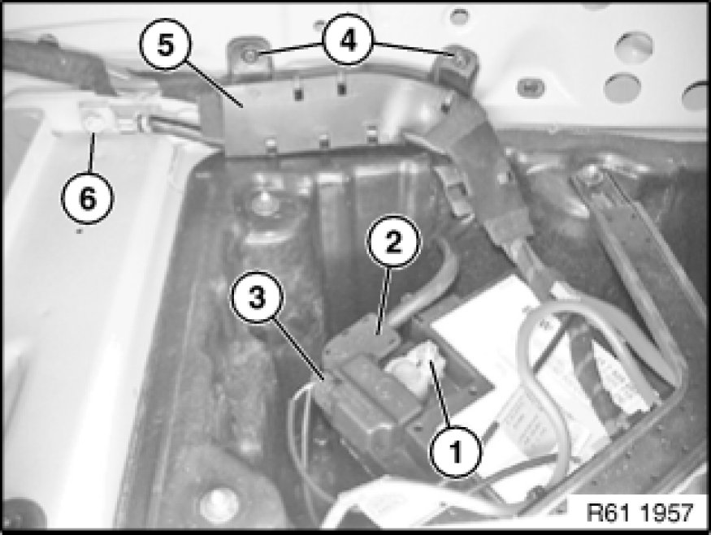

Negative: Service and Repair
61 12 013 - Replacing battery negative lead

Warning!
Observe safety instructions Technician Safety Information for handling vehicle battery.
Follow instructions for disconnecting and connecting battery [1][2]12 00 ... Instructions For Disconnecting and Connecting Battery.
Observe notes on power supply / on intelligent battery sensor (IBS).

Necessary preliminary tasks:
- Remove right luggage compartment wheel arch trim

Loosen nut (1). Tightening torque 61 21 1AZ Specifications.
Important!
Do not under any circumstances use force to pull off pole shoe.
Do not under any circumstances release socket-head cap screw of IBS.
Detach battery negative lead (2) in upward direction from battery.
Disconnect plug connection (3).
Release screws (4) and remove cable guide (5).
Installation Note:
Make sure battery positive lead (2) is laid correctly in cable guide (5).
Release nut (6) and disconnect battery negative lead (2). Tightening torque 61 12 5AZ Specifications.